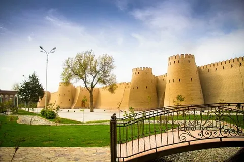

Sayohat
-
Суғд
-
Бӯстон
-
Гулистон
-
Истаравшан
-
Исфара
-
Истиқлол
-
Конибодом
-
Хуҷанд
-
Мухтори кӯҳистони Бадахшон
-
Хатлон
-
Кӯлоб
-
Бохтар
-
Норак
-
Левақанд

Осорхонаи таърихии вилояти Суғд ё (Қалъаи Хуҷанд) - бори нахуст соли 1986 дар шаҳри Хуҷанд ифтитоҳ шуда буд.
Он яке аз осорхонаҳои бузург дар вилояти Суғд маҳсуб мешавад, ки дар он намунаҳое аз осори таърихи гузаштаи халқи тоҷик гирдоварӣ шудаанд.
Бинои ҳозираи осорхона ба шакли иморати қадимаи анъанавии муҳофизатӣ сохта шудааст.
Он аз як толори васеи болоӣ ва
се толори калонҳаҷми зеризаминӣ иборат аст. Дар толори болоӣ ва ду толори зеризаминӣ намоишҳои осорхонавӣ созмон
дода шуда, дар як толори зеризаминӣ фонд (махзан) ҷой гирифтааст. Ҳоло масоҳати умумии осорхонаи навбунёд мутобиқ
ба лоиҳа 1279,2 м2,толори намоишӣ 1052,4 м2, ҷои нигаҳдории экспонатҳо 226,8 м2аст. Бурҷи он фарогирии 46,7 м2 масоҳат,118 метрбаландӣ
8,6 метрдиаметр мебошад.
Дар осорхона қасрҳои муҳташам, сутунҳо, ҳайкалҳо, ки дар Тахти Ҷамшед қомат афрохтаанд ҳамчунин нусхабардорӣ аз катибаи
Бесутун, нимпайкараи Дорои I ба маърази тамошобинон гузошта шудаанд.
Ҳайкали Темурмалик – Қаҳрамони халқи тоҷик- ин муҷассама аз тарафи муҷассамасози ҷавону боистеъдод Давронҷон Раҳматов-дорандаи Ҷоизаи давлатии ба номи Камоли Хуҷандӣ сохта шуда, бо баландиаш3,5 метр, ва истифодаи 4тонна метали биринҷӣ фароҳам гардидааст.[6]
Соли 2015 назди осорхонаи вилоят Боғи ба номи Камоли Хуҷандӣ бунёд ёфтааст, ки дар ҳудуди боғи истироҳатӣ айвонҳои миллӣ, роҳравҳои замонавӣ, гӯшаи ҳунарҳои халқӣ ва фаввораҳо бунёд ёфта, он ба таври муосир чароғон карда шудаанд. Ташкилёбии Мамнӯъгоҳи байналмилалии таърихию фарҳангӣ ва бостонию сайру
сайёҳӣ ва намоиши ҳунармандии истеҳсолии ярмаркавии «Қалъаи Хуҷанд» дар Регистони Хуҷанд дар солҳои истиқлоли ҷумҳурӣ ба анҷом расид.
Боғи ба номи Камоли Хуҷандӣ - дар шаҳри Хуҷанд, дар чапи соҳили Сирдарё бунёд шудааст. Боғи фарҳангӣ-фароғатии ба
номи Камоли Хуҷандӣ дар бари рӯди Сир соли 1924 ташкил ёфта, расмикушоди он 1-уми майи соли 1939 баргузор гардидааст.
Наздик як аср мешавад, ки ин макон ҷои истироҳату фароғати шаҳрвандону меҳмонон қарор дорад. Боғи фарҳангӣ-фароғатии ба
номи Камоли Хуҷандӣ дар рӯ ба рӯи Театри мазҳака ва мусиқии Камоли Хуҷандӣ ва Осорхонаи таърихии вилояти Суғд бунёд гардидааст.
Алҳол дарвозаи боғ 24 метр дарозӣ, 11 метру60 см. баландӣ дошта, бошаи сутунҳо аз маҳсулоти сохтмонии маҳаллӣ бино ёфта,
аз 16 сутун иборат аст. 8-тои он аз тарафи рост, 8 адади дигар аз тарафи чап ба дарвоза шукӯҳу шаҳомати олӣ бахшидаанд.
...
Мавзеи Исмоили Сомонӣ дар Хуҷанд - дар шаҳри Хуҷанд, дар чапи соҳили Сирдарё бунёд шудааст. Боғи фарҳангӣ-фароғатии ба
номи Камоли Хуҷандӣ дар бари рӯди Сир соли 1924 ташкил ёфта, расмикушоди он 1-уми майи соли 1939 баргузор гардидааст.
Наздик як аср мешавад, ки ин макон ҷои истироҳату фароғати шаҳрвандону меҳмонон қарор дорад. Боғи фарҳангӣ-фароғатии ба
номи Камоли Хуҷандӣ дар рӯ ба рӯи Театри мазҳака ва мусиқии Камоли Хуҷандӣ ва Осорхонаи таърихии вилояти Суғд бунёд гардидааст.
Алҳол дарвозаи боғ 24 метр дарозӣ, 11 метру60 см. баландӣ дошта, бошаи сутунҳо аз маҳсулоти сохтмонии маҳаллӣ бино ёфта,
аз 16 сутун иборат аст. 8-тои он аз тарафи рост, 8 адади дигар аз тарафи чап ба дарвоза шукӯҳу шаҳомати олӣ бахшидаанд.
...
Бозори Панҷшанбе - дар шаҳри Хуҷанд, дар чапи соҳили Сирдарё бунёд шудааст. Боғи фарҳангӣ-фароғатии ба
номи Камоли Хуҷандӣ дар бари рӯди Сир соли 1924 ташкил ёфта, расмикушоди он 1-уми майи соли 1939 баргузор гардидааст.
Наздик як аср мешавад, ки ин макон ҷои истироҳату фароғати шаҳрвандону меҳмонон қарор дорад. Боғи фарҳангӣ-фароғатии ба
номи Камоли Хуҷандӣ дар рӯ ба рӯи Театри мазҳака ва мусиқии Камоли Хуҷандӣ ва Осорхонаи таърихии вилояти Суғд бунёд гардидааст.
Алҳол дарвозаи боғ 24 метр дарозӣ, 11 метру60 см. баландӣ дошта, бошаи сутунҳо аз маҳсулоти сохтмонии маҳаллӣ бино ёфта,
аз 16 сутун иборат аст. 8-тои он аз тарафи рост, 8 адади дигар аз тарафи чап ба дарвоза шукӯҳу шаҳомати олӣ бахшидаанд.
...